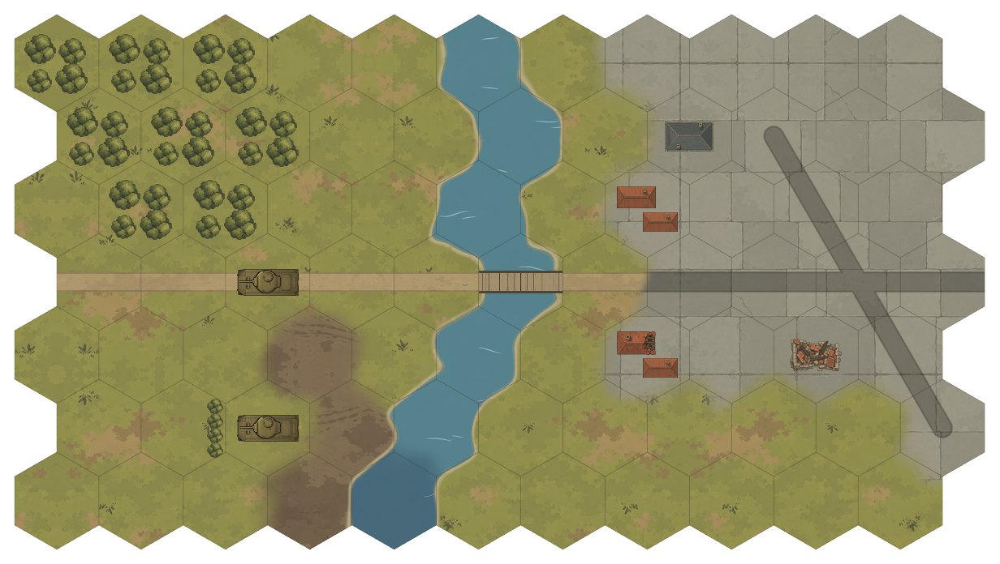

<!doctype html>
<html lang="zh-CN">
<meta charset="utf-8">
<meta name="viewport" content="width=device-width,initial-scale=1">
<title>地形候选 V3 审稿</title>
<style>
  *{box-sizing:border-box}body{margin:0;background:#252820;color:#e5e3d7;font:15px/1.6 system-ui,"Microsoft YaHei",sans-serif}
  header{padding:20px 28px;background:#30342b;border-bottom:1px solid #505548}h1{font-size:22px;margin:0 0 4px}p{margin:0;color:#c1c6b4;font-size:13px}
  nav{display:flex;gap:8px;flex-wrap:wrap;padding:14px 28px;align-items:center}button{border:1px solid #59614c;border-radius:5px;padding:7px 13px;background:#373e2e;color:#e5e3d7;cursor:pointer}button.active{background:#899365;color:#1e2418;border-color:#bdc796}button:focus-visible{outline:2px solid #e1cb82;outline-offset:3px}
  .zoom{margin-left:auto}main{margin:0 20px 20px;padding:12px;background:#e5e1d3;border-radius:5px;overflow:auto;max-height:calc(100vh - 190px)}img{display:block;max-width:100%;height:auto;margin:auto}main.actual img{max-width:none}footer{padding:0 28px 18px;font-size:13px;color:#bcc3ae}
</style>
<header><h1>地形候选 V3 · 简化细节与邻格衔接</h1><p>独立素材拼接预览；谢尔曼使用游戏现有贴图。游戏资源尚未替换。</p></header>
<nav aria-label="预览类型">
  <button class="active" data-file="map-summer-v3.png" data-note="半径 60，单格约 104×120。关注坦克与地形细节是否匹配、河岸以及城市交界。">夏季地图</button>
  <button data-file="map-summer-v3-no-grid.png" data-note="去掉格线后检查材质是否连续，避免格线掩盖底图接缝。">隐藏格线</button>
  <button data-file="map-winter-v3.png" data-note="连续雪层、冻泥地及冬季道路。谢尔曼仍为现有贴图。">冬季地图</button>
  <button data-file="map-pacific-v3.png" data-note="浅水、深水、海滩、开阔地、热带树林、岩地与跑道的衔接。">热带地图</button>
  <button data-file="terrain-candidates-v3.png" data-note="24 项单格候选样张；实际地图采用连续底材及邻格过渡。">全部地形</button>
  <button data-file="terrain-transitions-v3.png" data-note="每组上方为硬切、下方为邻格过渡，使用同一组底材。">衔接对照</button>
  <button data-file="terrain-directions-v3.png" data-note="六个方向的交界，以及三个地形共享顶点的检查。">六向与交角</button>
  <button class="zoom" id="zoom" aria-pressed="false">原始尺寸</button>
</nav>
<main id="viewer"></main>
<footer id="note">半径 60，单格约 104×120。关注坦克与地形细节是否匹配、河岸以及城市交界。</footer>
<script>
  document.querySelectorAll('button[data-file]').forEach(button=>button.addEventListener('click',()=>{
    document.querySelector('button.active')?.classList.remove('active');button.classList.add('active');
    const image=document.getElementById('preview');image.src=button.dataset.file;image.alt=button.textContent+'地形候选预览';
    document.getElementById('note').textContent=button.dataset.note;
  }));
  document.getElementById('zoom').addEventListener('click',event=>{
    const actual=document.getElementById('viewer').classList.toggle('actual');
    event.currentTarget.setAttribute('aria-pressed',String(actual));event.currentTarget.textContent=actual?'适应窗口':'原始尺寸';
  });
</script>
</html>
